| 日付 | 2024年1月8日（月） |
|---|---|
| 山域 | 奥武蔵 |
| メンバー | 家族（妻） |
| 山行形態 | 日帰り |
| アクセス | 車 |
| ルート (Map) | 黒山三滝駐車場 - 黒山三滝 - 関八州見晴台 - 花立松ノ峠 - (11:10) 傘杉峠 - (11:42) 顔振峠 - (11:52) 雨乞塚 (12:14) - (12:50) 越上山 - (13:19) 顔振峠 - (13:48) 坂尻登山口 - (14:02) 黒山三滝駐車場 |
2024年の初登り。子供は塾があるため親のみで行くことにする。
行先は黒山三滝から関八州見晴台～越上山を周回するコース。
関八州見晴台は14年振りの訪問だ。
黒山三滝の駐車場に到着。標高165m。
黒山三滝の近くにもう1つ駐車場があるのだが、観光客に配慮して少し遠めの駐車場を利用する。
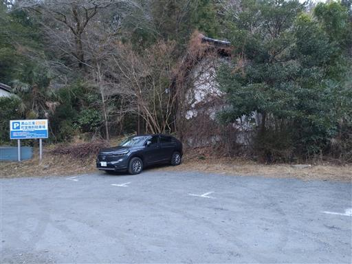
車道を歩いて黒山三滝を目指す。
黒山三滝は日本観光百選に選ばれているらしい。
帰って調べてみたら1950年に選定されたものらしく、かなり古い。
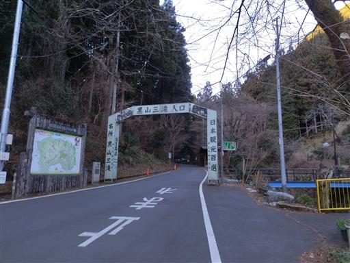
沢沿いの道を15分ほどだ。
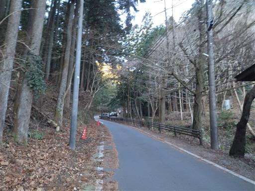
まずは三滝の一つ、天狗滝に到着。
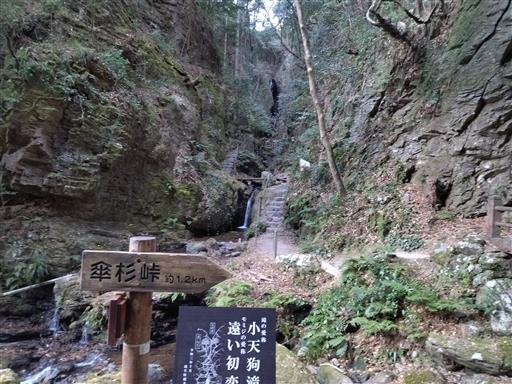
両側が崖に囲まれたゴルジュのような地形でなかなか良い雰囲気だ。
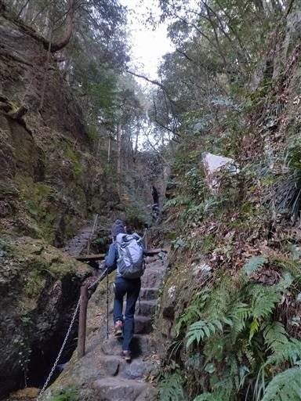
しかし、谷を歩く距離があまりにも短すぎる。あっという間に天狗滝に到着。
深い溝を流れ落ちる滝だが、上の少しの部分しか見えないのが残念だ。
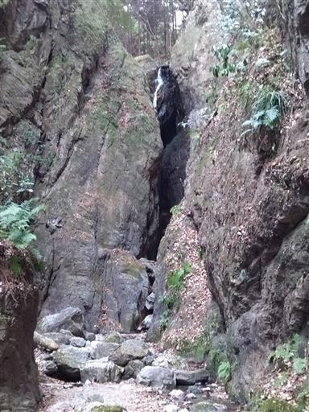
滝に近づくと余計に何も見えなくなってしまう。
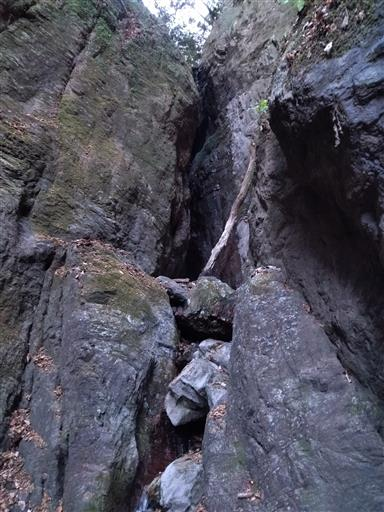
車道に戻って先に進むと、残りの二滝、男滝と女滝に到着する。
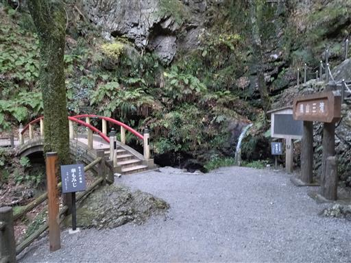
黒山三滝の男滝と女滝。小さい滝でちょっと迫力に欠ける。
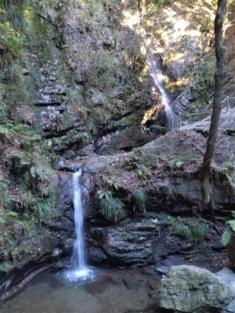
神様？っぽいものもまつられていて、観光地化されている。
まだ朝早いので人影はまばらだが、昼頃やあるいは紅葉の季節には賑わうのだろうか？
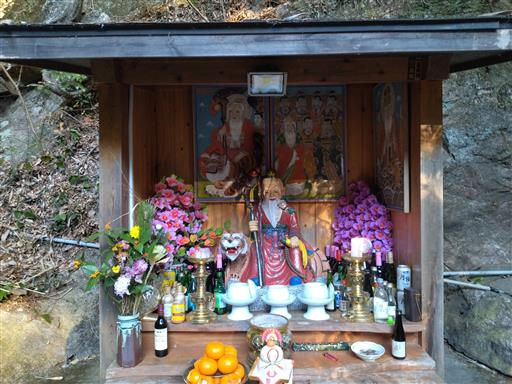
建物の裏の少し分かりにくいところから登山道が始まる。
巨大な剣が目印だ。
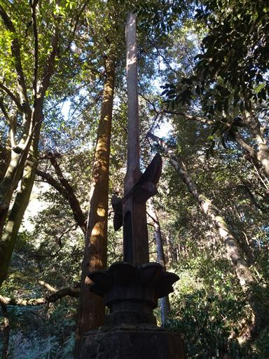
しばらく登ると車道に到達する。
途中で男坂を選んだのだが、ガードレールの裏に出てきて、
左右どちらに行けばよいかの標識もなく、極めて不親切だ。
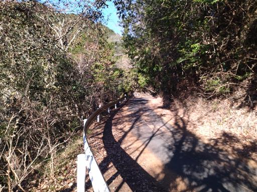
車道を左折して、しばらく歩くと再び登山口に到着する。
この辺りの山域は山が浅く、峠や稜線でたびたび車道が現れる。
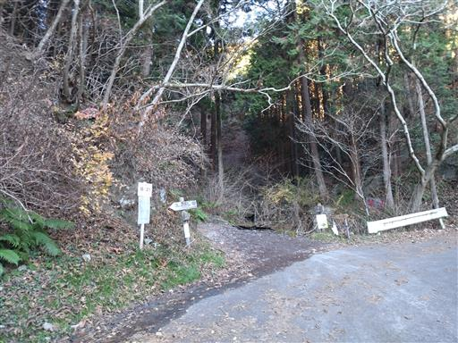
しばらくは気持ちの良い登山道が続く。
珍しく車道も植林地帯もない場所だ。
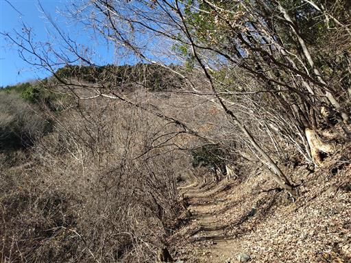
遠く関東平野を見渡せる。本日は快晴だ。
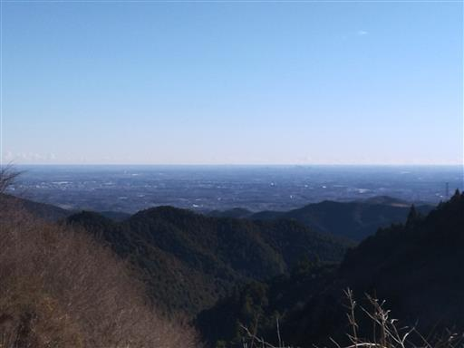
再び車道に合流。
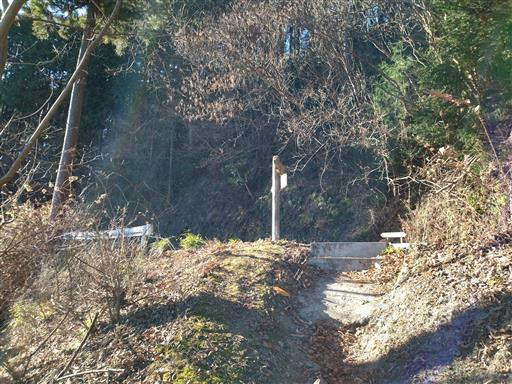
再度登山道に入って一登りで関八州見晴台に到着。
標高771mで本日の最高峰だ。
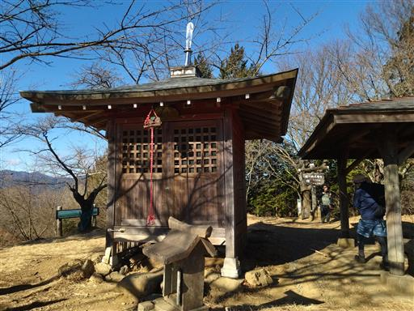
西の方には深く高い山々が連なっている。
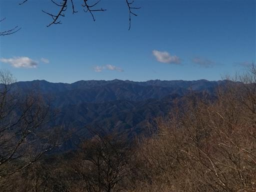
こちらは富士山。右の立派な山は川苔山だ。
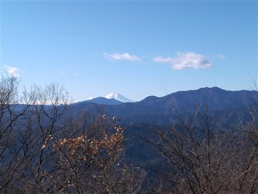
丹沢の山々。
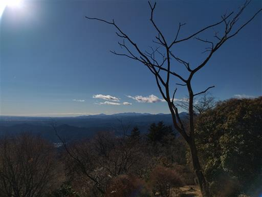
こちらの方角は樹木に遮られ展望がない。これでは八州の展望が得られない。
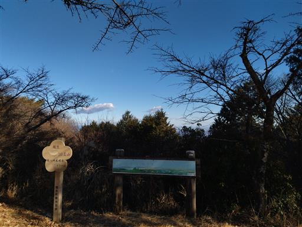
まだ昼食には早いので、おやつ休憩を取ったら出発。
元来た道を戻り花立松ノ峠に到着する。
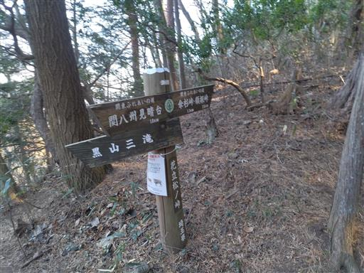
この辺りは植林地帯だらけ。車道と植林地帯を繰り返す。
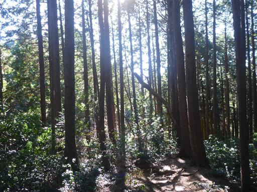
続いて傘杉峠に到着。ここも車道が乗越していて、峠の雰囲気はない。
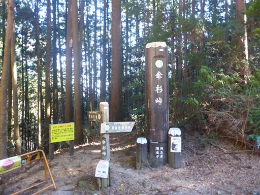
車道からは素晴らしい展望が広がる。
この景色を眺められる場所に、何軒かの飲食店が営業している。
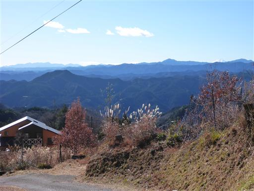
顔振峠に到着。明るく開けた峠で展望が良い。
ここにも飲食店が並んでいる。
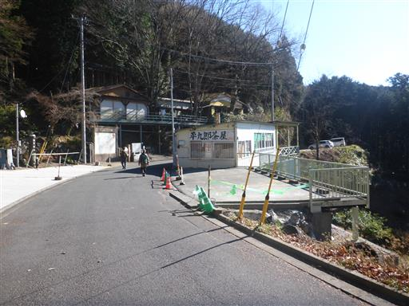
顔振峠の標識。
あまりの絶景に何度も振り返ったためこの名が付いたと言われる。
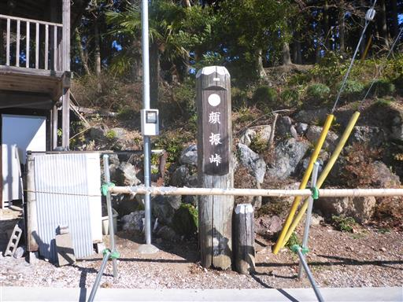
このまま下山だと物足りないので、ここから越上山を往復することにする。
雨乞塚（見晴台）を経由する道を選択。
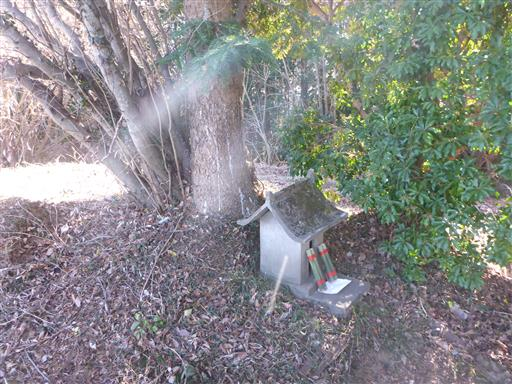
見晴台と言うほどの展望は無いが、静かなこの場所で昼食をとることにする。
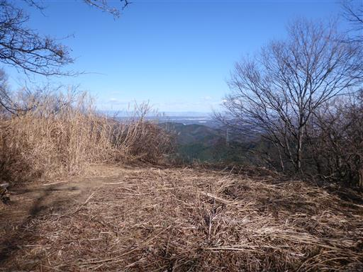
昼食を取ったら出発。雨乞塚～諏訪神社の道はかなり荒れている。
藪を抜けると諏訪神社に出てくる。山の中の立派な神社だ。
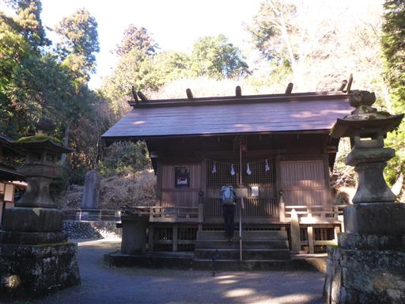
この建物は一体何だろう？傾斜があって人の背の高さから、奥の方は腰の高さ程度だ。
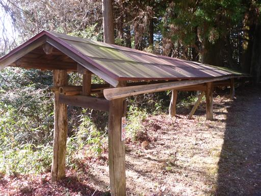
最後に越上山に向かう。途中スカイツリーの展望台がある。
この辺りが標高500mらしく、スカイツリーよりだいぶ低い。
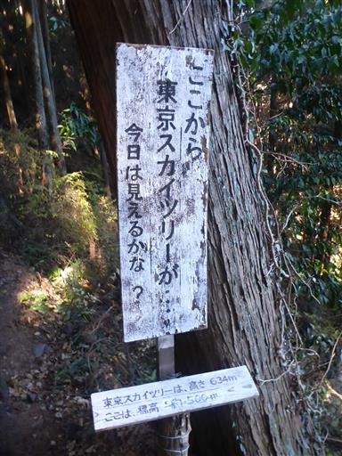
本日は快晴で、スカイツリーが良く見えている。
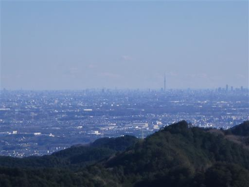
しばらく歩くと越上山に到着する。標高566m。
山頂は樹林に覆われて展望がないが、少し手前に木が切られて展望が広がる場所があり
団体登山者が休憩をしている。
関八州見晴台ほどの展望ではないため、景色をチラ見したら出発する。
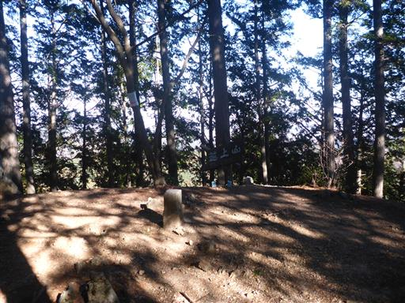
顔振峠に戻る道は雨乞塚を経由しない巻道を選択。よく整備された歩きやすい道だ。
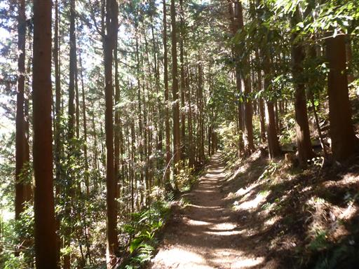
下方に二重の塔が見える。これは一体何だろう？
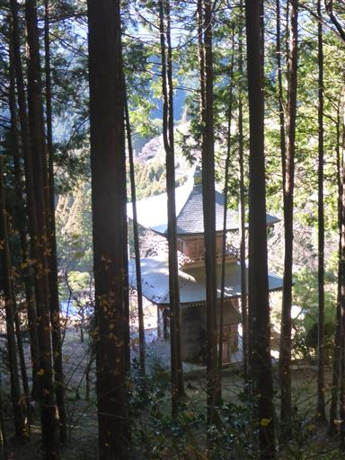
顔振峠に戻ってくる。ここから黒山に下山する。
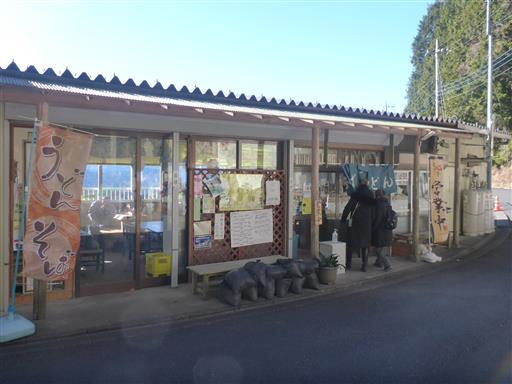
30分ほどで下山完了。ここから駐車場まで車道歩きだ。
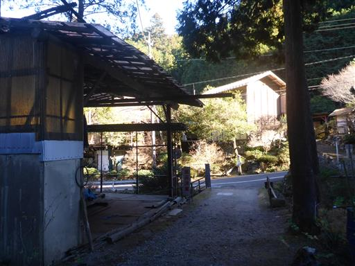
飛騨観光や白川村合掌造りなど、謎の看板がある。
何らか村おこしをしようとしているのだろうか？
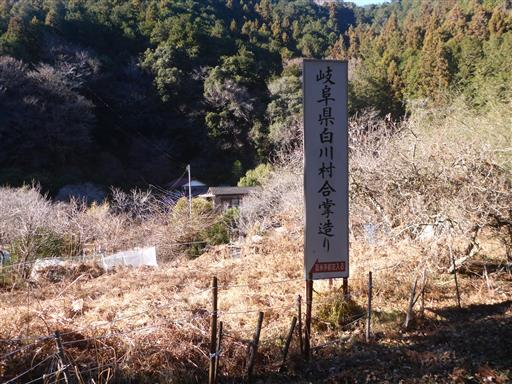
渋沢平九郎自刃の地を見学したりしながら、駐車場に向かう。
14年振りの関八州見晴台は快晴のもと、素晴らしい展望を楽しめた。
一方、奥武蔵の山らしく、車道と植林地帯が多くて、登山としては少々物足りなかった。
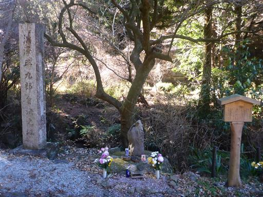